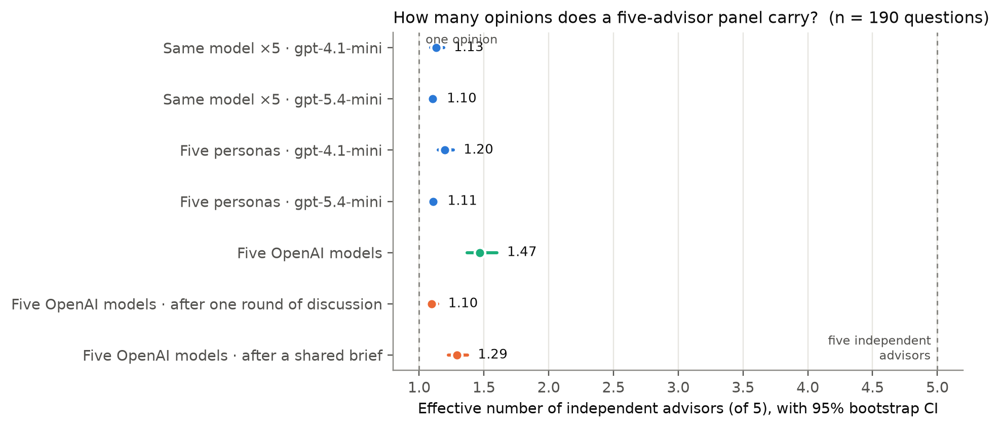
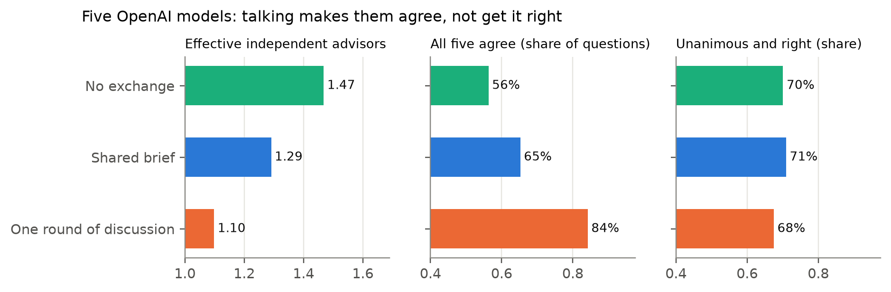
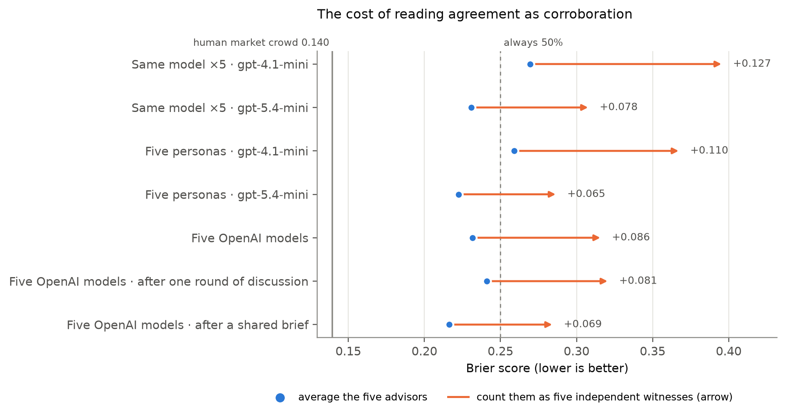

When AI advisors agree, how many independent opinions do you actually get? We asked five-advisor AI panels, built the way products build them, 190 forecasting questions that had already resolved, and measured how much of their agreement was echo.
Ask an AI product a hard question and you may get a panel back: several models side by side, one model playing a set of named experts, or a group of agents that confer before answering. When they agree, it feels like corroboration. It is corroboration only if the advisors are independent once you know the truth. Two experts reading the same source, or one echoing the other, add nothing to each other (Goldman 2001; Clemen & Winkler 1985). No interface shows you which case you are in.
We took 190 questions from ForecastBench (Polymarket, Metaculus, Manifold, INFER) that were frozen in July–August 2026 and resolved by October, after every model's training cutoff. Each comes with the prediction market's price on the freeze date, a real human-crowd forecast that the models never saw. Every panel has five advisors who each give a probability and a one-sentence reason. Only the way the five are produced changes.
We measure independence with the statistic a reader's inference actually depends on: how correlated the advisors are once the outcome is known. From it comes the effective number of independent advisors, neff = 5 / (1 + 4ρ). Five independent advisors give 5; five copies of one opinion give 1.
One model asked five times is worth 1.10 to 1.13 opinions. Dressing the five calls as a political scientist, an economist, a superforecaster, a journalist and a risk analyst adds almost nothing (1.11 to 1.20). Five different models do better, 1.47, and a panel spanning four developers (OpenAI, Google, Alibaba, NVIDIA) does no better than five OpenAI models (1.41 against 1.42 on the same questions).

After one round in which each model saw the other four answers, independence fell from 1.47 to 1.10, the level of a single model. The share of questions where all five agreed rose from 56% to 84%. Unanimous panels were right 70% of the time before and 68% after. This is the effect Lorenz et al. (2011) found in human groups, now in a panel of models. A shared research brief did something milder: a little less independence, a little more accuracy.

Read as five independent witnesses, the panels looked 92% to 95% sure on average and were right on 56% to 68% of questions. That reading worsened their Brier scores by 0.065 to 0.127. The prediction market (Brier 0.140) beat every AI panel; without web access the panels were close to the 0.25 of always answering 50%.

We gave the same panels to two AI decision-makers and asked for a final forecast, with no note, a generic warning, a true independence label ("these five carry the information of about 1.5 independent advisors"), or a false one ("5.0"). They simply averaged the panel, even when it was unanimous, and no note changed that. The over-counting risk sits with people, who are known to read AI consensus as social proof (Lee & Lee 2026).

The number of advisors on screen overstates the evidence by a factor of three to five. Interfaces should show something closer to neff than to n, should not present personas as independent experts, and should collect forecasts before letting agents talk. An independence label is cheap to compute from a panel's track record and easy to audit, but a false one is just as easy to print, so who issues it matters. The report gives a preregistered protocol for testing the label with people.
No web access, so the panels were weak forecasters. Questions come from prediction markets and skew towards politics, crypto and sport. The five-witness reading is a stylised reader, so its cost is an upper bound. Mostly small and mid-sized OpenAI models, because the open-weight endpoints rate-limited heavily during the sprint. No human participants yet. Details and the dual-use discussion are in the report.
Python 3.11+, pip install -r requirements.txt, an OPENAI_API_KEY. Then python -m echo.data, python -m echo.panels, python -m echo.analyze. Every model call is cached in the repository, so the analysis reruns without new calls.